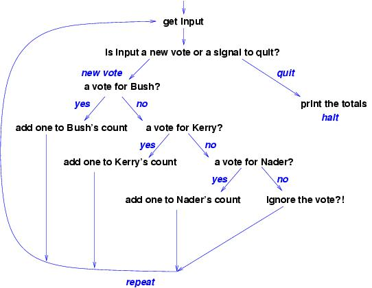

CIS300 Spring 2005
Fundamentals of Program Design
Every computer program is built from components, data,
and control.
For a
single-user application (used by one person at a time),
which normally
reads data, saves it in a data structure,
computes on the data, and writes the results,
there is a standard way of organizing the component structure,
data structure, and control structure:
-
First,
design the program's component structure
with three components, organized in a
model-view-controller pattern.
-
Next, decide what form of data structure (array,
table, set, list, tree, etc.) will hold the program's data.
The data structure will be inserted in the program's model
component.
-
Then, write the algorithm that defines the execution steps --- the
control structure.
The algorithm will be placed inside the program's
controller.
-
Determine the form of input and output (disk file, typed text
in a command window, dialogs, a graphical-use interface, etc.)
that the program uses. This will be embedded in the program's
view.
Once the four-step design is finished, then it is time to convert
the design into (Java) coding.
We now consider each stage of the design process.
Component structure
Again,
the program's job is to
read information into the computer and save it in a
format which lets the computer compute answers from the data
that can be written.
The program can be written as one large piece of code,
but this forces a programmer to think about all parts of the program
at once. Years of experience has shown that it is better to design
a program in three parts, in a model-view-controller pattern:
The data flows into the program through the view component
and is directed by the controller into
the model. The controller component
manipulates the data and tells the view to output the answer.
A bit more precisely, we have that
-
The controller component holds the algorithm, that is the instructions that
tell the computer when
to read data, compute on it, and write the answers.
-
The model component holds the structures that save the data so
that it can be easily computed upon. For example, if the program
is a spreadsheet program, then the model holds a table (grid)
that represents (``models'') the spreadsheet. Or, if the program
is the file manager for Linux, then the model is a tree structure
that represents the folder-and-file structure of the disk-file system.
-
The view component holds the operations that connect the program
to the input and output devices (the disk or display or printer....).
All three components are important, but the key to building a good
quality program is selecting the appropriate data structure for
the model component.
Data structure
When you solve a problem with a computer program, always ask first,
How should the program store the information upon which it computes?
Sometimes people talk about ``modelling'' the problem within the
computer; the way the data is held is called the model.
Recall the previous examples:
-
If
the program is a spreadsheet program, then the information should
be held in a data structure that is a grid.
-
If the program is a bank-account database, then the information should
be grouped into customer accounts, each with a unique ID,
saved in an array or set.
-
If the program is a file-system manager, then the information are files
and folders that are organized in a tree-like structure.
Each of these problems required a distinct data structure
in the solution.
It helps to draw a picture of the structure.
For example, if you are writing a vote-counting program for the 2004
US presidential election, you might draw this picture of the model:

On the other hand, if you are writing the file-system manager for
Linux, then your program must hold folders and files,
and the picture of the model might look like this:

The picture should suggest to you the kind of computer variables and
data structures you will require to build the solution.
The purpose of a data-structures course like
CIS300 is to train you at using a variety of such structures.
The model component is ``passive'' --- another program component,
the controller, inserts data into the structure, asks
for computations, and extracts the answers.
Control structure
Every program follows a series of steps to solve a problem.
The series of steps is called an algorithm; it
controls the computer's work.
It is best to begin with an ``outline'' of the algorithm.
The outline can be written in a graphical form, called a
flowchart.
For example, here is an outline, written as a flowchart, of an
algorithm for reading and totalling the votes of the presidential
election:

Many people like to develop their algorithms with a flowchart,
because the various paths can be developed one at a time,
and the arrows make it less likely to forget a case in the development.
The algorithm is inserted into the controller component, and when
writing the program in Java, you can code the algorithm into the
main method.
Methods for the components
Often we see phrases in the algorithm
that are not at the level of Java instructions.
(Examples: ``add one to Kerry's count'';
``print the totals in the model.'')
These phrases are clues that you should write procedures (methods)
that do the work described by the phrases. For example,
since the phrase, ``add one to Kerry's count''
implicitly mentions the data structure in the model, we might revise our
our description of the model component to have a method that does what
the phrase suggests:
This makes the algorithm in the controller easier to write, because
it merely invokes the model's method, meaning that the controller
does not have to deal with the details of the data structure.
(This arrangement is also important if we must change the data structure
within the model: the codings of the methods in the model are changed, and
we do not rewrite the controller.)
Later, we write the code
for the methods. If the coding
is complicated, we might wish to write flow charts, possibly
defining even more methods.
Input and output
A program that reads and writes data will normally use a prebuilt
component. For example, when a program prints output to the command
window, it uses the System.out component and its
methods, print and println.
For input, if we use the JOptionPane object from
javax.swing to generate an input dialog, then the
application we design would look like this:
Finally, in some cases, the programmer will build a customized
input-output component that uses frames, text fields, buttons,
etc. This makes the View component more complex still.
In the next lectures, we design and build
applications using this design
process.
Software Development Methodology
The design stage is only one stage in the stages one undertakes to
build and deliver a software application.
A standard development methodology goes in three stages:
-
Requirements:
The program's intended user tells us how she wishes to use the program.
The user must tell us stories and draw pictures that explain the
different ways the program might be used. Each possible usage is
called a use-case. (Use-cases are presented in the next lecture.)
-
Design: The programmer studies the use-cases
and applies the knowledge to designing the component structure,
data structure, and control structure of the solution, as described
above.
Once the program is designed, the programmer does a ``safety check,''
explaining how each use-case executes with the design.
-
Implementation and Testing: The program is written to match
the design, and it is tested to verify that
it behaves correctly. The testing
usually proceeds in two stages: unit testing, where each
component is tested by itself as much as possible, and integration
testing, where the entire assembled program is tested on the use-caes.
At this point, the program is given to the user, who will almost
certainly respond with more requirements that cause the above
three-step process to repeat.
We apply the software development methodology in the next lecture.